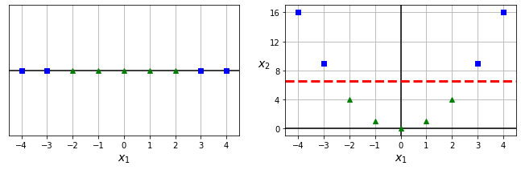
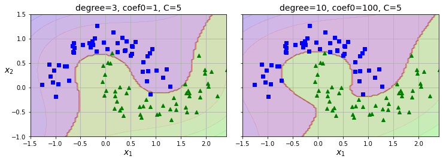
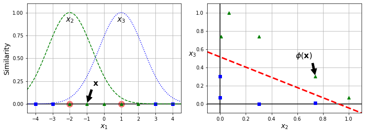
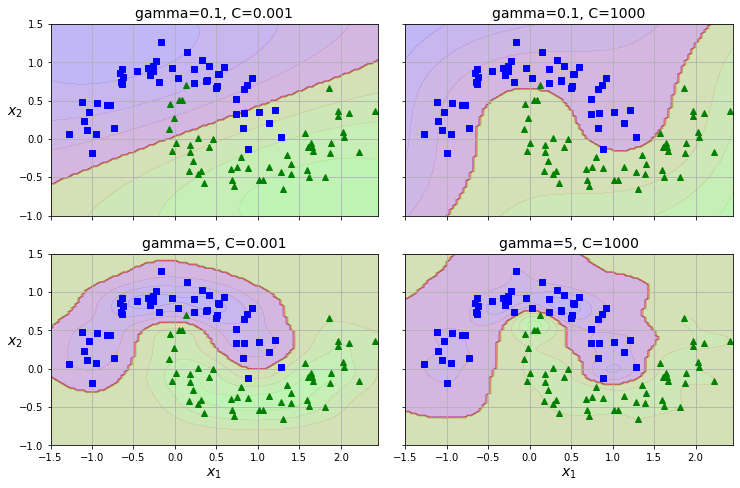
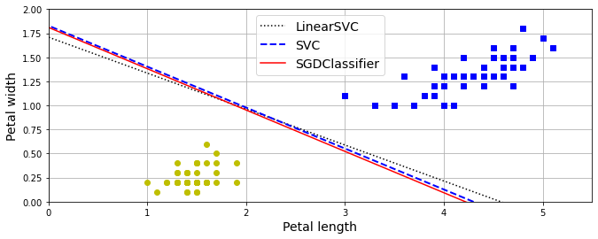

Section 2 — Training Linear Models & Support Vector Machines
Κανόνας πηγών: Το παρόν υλικό είναι απλή ελληνική επεξήγηση μόνο των ανεβασμένων αρχείων DAMA61 ΟΣΣ2, Géron Chapter 4/5, δύο notebooks και δύο απομαγνητοφωνήσεων. Οι τίτλοι και η ομαδοποίηση αποτελούν διδακτική ταξινόμηση της ίδιας ύλης. Δεν προστίθεται νέα θεωρία, νέο dataset ή πρωτότυπη άσκηση.
Ανάγνωση παραπομπών: Η «σελίδα PDF» είναι η θέση στο πραγματικό ανεβασμένο αρχείο. Το «κελί» στο .ipynb αριθμείται από 0, όπως βρίσκεται αποθηκευμένο στη σειρά cells. Οι απομαγνητοφωνήσεις δεν περιλαμβάνουν timestamps και τεκμηριώνονται με γραμμές.
Κώδικας: Παραθέτουμε μόνο πραγματικά αποσπάσματα notebook και εξηγούμε τη σύνδεσή τους με τα προηγούμενα κελιά. Δεν ισχυριζόμαστε νέα εκτέλεση. NOT EXECUTED (νέα εκτέλεση). Αποθηκευμένα outputs του πρωτοτύπου αναγνωρίζονται ρητά ως τέτοια.
Part 7 — Μη γραμμικά SVM και kernels
Μάθημα 19 — Μη γραμμική SVM και Polynomial Kernel
Προαπαιτούμενα από την υπάρχουσα ύλη: Μαθήματα 07, 16–18.
Από την πηγή — τι διδάσκεται
Ο γραμμικός SVM διαχωρίζει τις κατηγορίες με γραμμικό όριο στα αρχικά χαρακτηριστικά. Το βιβλίο δείχνει όμως παραδείγματα που δεν διαχωρίζονται με ευθεία. Στο σχήμα 5-5 προστίθεται νέο χαρακτηριστικό χ στο τετράγωνο και ένα αρχικά μη διαχωρίσιμο σύνολο γίνεται διαχωρίσιμο στον νέο χώρο. Το notebook εφαρμόζει ανάλογη ιδέα στο make_moons, ένα σύνολο δύο αλληλοεμπλεκόμενων ημισελήνων.
Η πηγή παρουσιάζει αφενός PolynomialFeatures πριν από LinearSVC, αφετέρου SVC(kernel="poly"). Το kernel trick υπολογίζει το αποτέλεσμα της εργασίας σε κατάλληλο νέο χώρο χαρακτηριστικών χωρίς να χρειάζεται να κατασκευάσει ρητά όλα τα πρόσθετα χαρακτηριστικά. Η υπερπαράμετρος degree ορίζει τον βαθμό του polynomial kernel και η coef0 ελέγχει τη σχετική συνεισφορά υψηλών και χαμηλών βαθμών.
Οπτική εξήγηση — πραγματικά σχήματα της πηγής

Αυθεντικό αποθηκευμένο διάγραμμα: 05_support_vector_machines(1).ipynb — κελί 24 (αρίθμηση από το 0). Αναπαράγεται από το υπάρχον output του notebook· NOT EXECUTED εδώ.
Πώς να το διαβάσεις: Δες γιατί μια ευθεία δεν αρκεί στην αρχική αναπαράσταση, ενώ η αλλαγή χαρακτηριστικών της πηγής επιτρέπει τον διαχωρισμό.

Αυθεντικό αποθηκευμένο διάγραμμα: 05_support_vector_machines(1).ipynb — κελί 29 (αρίθμηση από το 0). Αναπαράγεται από το υπάρχον output του notebook· NOT EXECUTED εδώ.
Πώς να το διαβάσεις: Η πηγή δείχνει πολυωνυμικά όρια διαφορετικής μορφής· το kernel επιτρέπει τη χρήση αυτής της ιδέας χωρίς να κατασκευάζονται ρητά όλα τα νέα χαρακτηριστικά.
Απλή επεξήγηση της ίδιας έννοιας
Η σημαντική ιδέα δεν είναι ότι σχεδιάζουμε απαραίτητα ευθεία στην αρχική εικόνα. Μπορεί το όριο στην αρχική απεικόνιση να φαίνεται καμπύλο, επειδή η γραμμική διάκριση πραγματοποιείται στον μετασχηματισμένο χώρο.
Το βιβλίο συγκρίνει polynomial kernels βαθμού 3 και βαθμού 10 στο make_moons. Η αύξηση βαθμού επιτρέπει πιο περίπλοκο όριο, αλλά μπορεί να αυξήσει τον κίνδυνο overfitting. Ο διδάσκων τονίζει την επιλογή έτοιμου kernel αντί της ρητής δημιουργίας πάρα πολλών polynomial features σε SVM, ως πρακτική σύσταση της διάλεξης.
Καθοδηγούμενη εξήγηση — ακολουθούμε αργά την ίδια πηγή
Το πρόβλημα των μη γραμμικών δεδομένων εμφανίζεται ήδη στο σχήμα με τα δύο μισοφέγγαρα του make_moons. Εκεί μια απλή ευθεία στον αρχικό χώρο δεν φτάνει. Το βιβλίο παρουσιάζει πρώτα τον ρητό μετασχηματισμό πολυωνυμικών χαρακτηριστικών. Μετά δείχνει το polynomial kernel, που επιτρέπει αντίστοιχο χειρισμό χωρίς να κατασκευάσουμε όλα τα νέα χαρακτηριστικά.
Στον τύπο του kernel τα δύο παραδείγματα, χι του i και χι του j, μετασχηματίζονται με τη φι και μετά συνδυάζονται μέσω εσωτερικού γινομένου. Η πρακτική αξία της τεχνικής είναι ότι το ειδικό kernel μπορεί να δώσει απευθείας την τιμή του γινομένου των μετασχηματισμένων χαρακτηριστικών.
Το πραγματικό παράδειγμα Python χρησιμοποιεί SVC με kernel="poly", degree=3, coef0=1 και C=5, μετά το StandardScaler. Αυτές οι τιμές ανήκουν στην πηγή. Το coef0 επηρεάζει τον σχετικό ρόλο όρων διαφορετικού βαθμού, όπως εξηγεί ο Géron· δεν το παρουσιάζουμε ως αυθαίρετο σταθερό όρο της απλής γραμμικής παλινδρόμησης.
Οι τύποι της πηγής και τι σημαίνουν
Προφορική ανάγνωση και επεξήγηση: Το κάπα δύο παραδειγμάτων ισούται με το εσωτερικό γινόμενο των μετασχηματισμένων χαρακτηριστικών φι των δύο παραδειγμάτων. Αυτός είναι ο τρόπος με τον οποίο η πηγή περιγράφει την ιδέα kernel.
Αριθμητικό παράδειγμα ή εφαρμογή — αποκλειστικά από την πηγή
Πραγματικό make_moons παράδειγμα: Το notebook δημιουργεί 100 δείγματα με noise=0.15 και random_state=42. Εκπαιδεύει πρώτα PolynomialFeatures(degree=3), StandardScaler(), LinearSVC(C=10, ...) και μετά χρησιμοποιεί SVC(kernel="poly", degree=3, coef0=1, C=5).
Βασική Python από το πραγματικό notebook
Πριν από τον κώδικα: Η διαδικασία και η σειρά των εντολών έχουν οριστεί από τα συγκεκριμένα κελιά του δοσμένου notebook. Δεν δημιουργούμε νέα υλοποίηση.
Ακριβές απόσπασμα του παρεχόμενου 05_support_vector_machines(1).ipynb, κελί 25 (αρίθμηση από 0):
from sklearn.datasets import make_moons
from sklearn.preprocessing import PolynomialFeatures
X, y = make_moons(n_samples=100, noise=0.15, random_state=42)
polynomial_svm_clf = make_pipeline(
PolynomialFeatures(degree=3),
StandardScaler(),
LinearSVC(C=10, max_iter=10_000, dual=True, random_state=42)
)
polynomial_svm_clf.fit(X, y)Ακριβές απόσπασμα του παρεχόμενου 05_support_vector_machines(1).ipynb, κελί 28 (αρίθμηση από 0):
from sklearn.svm import SVC
poly_kernel_svm_clf = make_pipeline(StandardScaler(),
SVC(kernel="poly", degree=3, coef0=1, C=5))
poly_kernel_svm_clf.fit(X, y)Επεξήγηση των πραγματικών βημάτων: Κελί 25: εισάγει make_moons και PolynomialFeatures, παράγει ακριβώς τα δεδομένα της πηγής και δημιουργεί pipeline με polynomial χαρακτηριστικά, κλιμάκωση και LinearSVC. Κελί 28: χρησιμοποιεί την εναλλακτική SVC με polynomial kernel και fit(X,y). Δεν προτείνονται νέα API πέρα από αυτά τα κελιά.
Εκτέλεση: NOT EXECUTED εδώ· οποιαδήποτε αριθμητική έξοδος παραπάνω είναι αποθηκευμένη στο πρωτότυπο notebook.
Διαβάζουμε τον πραγματικό κώδικα γραμμή προς γραμμή
Οι παρακάτω παρατηρήσεις εξηγούν μόνο τις εντολές που υπάρχουν ήδη στα παρατιθέμενα αποσπάσματα. Δεν αποτελούν νέο πρόγραμμα. Για την ακριβή προέλευση κάθε block χρησιμοποιούμε τις ήδη σημειωμένες παραπομπές notebook/κελιού του μαθήματος. Νέα εκτέλεση: NOT EXECUTED.
Απόσπασμα 1, στη σειρά της πηγής: - from sklearn.datasets import make_moons — Φέρνει στον κώδικα τη βιβλιοθήκη, τη συνάρτηση ή την κλάση που χρησιμοποιείται ήδη σε αυτό το δοσμένο παράδειγμα. - from sklearn.preprocessing import PolynomialFeatures — Φέρνει στον κώδικα τη βιβλιοθήκη, τη συνάρτηση ή την κλάση που χρησιμοποιείται ήδη σε αυτό το δοσμένο παράδειγμα. - X, y = make_moons(n_samples=100, noise=0.15, random_state=42) — Δημιουργεί το υπάρχον dataset δύο μη γραμμικών ομάδων, με το πλήθος, τον θόρυβο και το seed που όρισε το βιβλίο. - polynomial_svm_clf = make_pipeline( — Συνδέει τα επιμέρους βήματα στην ακριβή σειρά με την οποία τα εκτελεί η πηγή. - PolynomialFeatures(degree=3), — Επιλέγει τον βαθμό των υπαρκτών πολυωνυμικών χαρακτηριστικών και τον χειρισμό του σταθερού όρου. - StandardScaler(), — Προσθέτει την κλιμάκωση χαρακτηριστικών πριν από το SVM, όπως απαιτεί η συγκεκριμένη ακολουθία της πηγής. - LinearSVC(C=10, max_iter=10_000, dual=True, random_state=42) — Ορίζει τον γραμμικό ταξινομητή SVM και τις δοσμένες τιμές των υπερπαραμέτρων του. - polynomial_svm_clf.fit(X, y) — Εκπαιδεύει το ήδη ορισμένο μοντέλο στα συγκεκριμένα χαρακτηριστικά και τις γνωστές εξόδους. Απόσπασμα 2, στη σειρά της πηγής: - from sklearn.svm import SVC — Φέρνει στον κώδικα τη βιβλιοθήκη, τη συνάρτηση ή την κλάση που χρησιμοποιείται ήδη σε αυτό το δοσμένο παράδειγμα. - poly_kernel_svm_clf = make_pipeline(StandardScaler(), — Συνδέει τα επιμέρους βήματα στην ακριβή σειρά με την οποία τα εκτελεί η πηγή. - SVC(kernel="poly", degree=3, coef0=1, C=5)) — Ορίζει τον ταξινομητή SVM με τον kernel και τις υπερπαραμέτρους που επέλεξε το βιβλίο. - poly_kernel_svm_clf.fit(X, y) — Εκπαιδεύει το ήδη ορισμένο μοντέλο στα συγκεκριμένα χαρακτηριστικά και τις γνωστές εξόδους.
Περιορισμοί και προσοχή
Η αποτελεσματικότητα εξαρτάται από το πρόβλημα, τον βαθμό και το C. Το kernel trick δεν είναι μια αυθαίρετη μετατροπή: το βιβλίο αναφέρει ότι μόνο κατάλληλες συναρτήσεις λειτουργούν ως kernels.
Τι κρατώ από το υπάρχον μάθημα
Nonlinear SVM: το όριο στην αρχική εικόνα μπορεί να είναι καμπύλο· kernel επιτρέπει υπολογισμό χωρίς ρητή δημιουργία όλων των νέων χαρακτηριστικών.
Μάθημα 20 — Similarity Features και Gaussian RBF Kernel
Προαπαιτούμενα από την υπάρχουσα ύλη: Μάθημα 19.
Από την πηγή — τι διδάσκεται
Το βιβλίο παρουσιάζει και μια άλλη μέθοδο για μη γραμμικά δεδομένα: μετατροπή με βάση την ομοιότητα προς συγκεκριμένα σημεία αναφοράς, που ονομάζονται landmarks. Για κάθε σημείο μπορεί να μετράται η ομοιότητά του με ένα landmark μέσω της Gaussian radial basis function, RBF. Η συνάρτηση αποκτά τιμή ένα στο landmark και μικραίνει όσο αυξάνει η απόσταση.
Ο Géron δίνει συγκεκριμένο αριθμητικό παράδειγμα. Στο αρχικό μονοδιάστατο dataset ορίζει landmarks στα -2 και 1 και gamma 0.3. Για το σημείο -1 οι αποστάσεις είναι 1 και 2. Οι νέες τιμές είναι αντίστοιχα περίπου 0.74 και 0.30. Το διάγραμμα 5-8 δείχνει ότι ο νέος χώρος χαρακτηριστικών μπορεί να γίνει γραμμικά διαχωρίσιμος.
Στο SVM ο RBF kernel προσφέρει αντίστοιχη αξιοποίηση ομοιοτήτων χωρίς να προσθέτει ρητά όλα τα χαρακτηριστικά. Το βιβλίο εξηγεί ότι το gamma ελέγχει πόσο τοπική είναι η επιρροή των σημείων. Μεγαλύτερο gamma δημιουργεί στενότερες περιοχές επιρροής και συχνά πιο ακανόνιστο όριο, ενώ μικρότερο gamma δίνει πλατύτερη επιρροή και ομαλότερο όριο.
Οπτική εξήγηση — πραγματικά σχήματα της πηγής

Αυθεντικό αποθηκευμένο διάγραμμα: 05_support_vector_machines(1).ipynb — κελί 31 (αρίθμηση από το 0). Αναπαράγεται από το υπάρχον output του notebook· NOT EXECUTED εδώ.
Πώς να το διαβάσεις: Δες τις κορυφές των καμπυλών similarity κοντά στα αρχικά landmarks και την πτώση μακριά από αυτά.

Αυθεντικό αποθηκευμένο διάγραμμα: 05_support_vector_machines(1).ipynb — κελί 34 (αρίθμηση από το 0). Αναπαράγεται από το υπάρχον output του notebook· NOT EXECUTED εδώ.
Πώς να το διαβάσεις: Στο τετραπλό σχήμα σύγκρινε πώς αλλάζει η λεπτομέρεια της περιοχής απόφασης όταν αλλάζουν gamma και C. Δεν προσθέτουμε δικά μας δεδομένα.
Απλή επεξήγηση της ίδιας έννοιας
Το landmark είναι απλώς το σημείο αναφοράς για τη μέτρηση ομοιότητας. Δεν είναι νέα κατηγορία δεδομένων. Η συγκεκριμένη Gaussian RBF εξετάζει την απόσταση: κοντά στο landmark η ομοιότητα είναι μεγάλη, μακριά μικραίνει. Το gamma δεν είναι πιθανότητα, αλλά υπερπαράμετρος της συνάρτησης.
Στο σχήμα 5-9, ο συγγραφέας αλλάζει τόσο το gamma όσο και το C. Η σύγκριση δείχνει ότι η μορφή του ορίου εξαρτάται από δύο διαφορετικούς ελέγχους, όχι μόνο από το ένα μέγεθος. Το ίδιο το βιβλίο υποδεικνύει μείωση gamma όταν ένα RBF μοντέλο υπερπροσαρμόζεται, και αύξησή του όταν υποπροσαρμόζεται, ανάλογα πάντα και με το C.
Καθοδηγούμενη εξήγηση — ακολουθούμε αργά την ίδια πηγή
Το βιβλίο δείχνει και άλλον δρόμο για μη γραμμικά δεδομένα: αντί να δημιουργήσουμε δυνάμεις του χι, μπορούμε να μετρήσουμε ομοιότητες προς συγκεκριμένα σημεία αναφοράς. Η Gaussian RBF είναι συνάρτηση που παίρνει τιμές κοντά στο ένα όταν είμαστε κοντά στο landmark και μικρότερες τιμές όσο απομακρυνόμαστε.
Στο πραγματικό παράδειγμα υπάρχουν landmarks στο μείον δύο και στο ένα και εξετάζουμε το σημείο μείον ένα. Οι αποστάσεις είναι μία και δύο μονάδες. Με γάμμα 0.3, για την πρώτη απόσταση ο υπολογισμός είναι εκθετική του μείον 0.3 και δίνει περίπου 0.74. Για τη δεύτερη είναι εκθετική του μείον 1.2 και δίνει περίπου 0.30. Πρόκειται για τους δύο δοσμένους υπολογισμούς του σχήματος 5-8.
Στο RBF SVM το gamma επηρεάζει το πόσο τοπικά δρα κάθε σημείο. Το βιβλίο δείχνει μικρότερο gamma με πιο ομαλό όριο και μεγαλύτερο gamma με πιο περίπλοκο όριο. Στο αντίστοιχο notebook χρησιμοποιούνται SVC(kernel="rbf", gamma=5, C=0.001) και StandardScaler.
Οι τύποι της πηγής και τι σημαίνουν
Προφορική ανάγνωση και επεξήγηση: Η Gaussian RBF είναι ε στη δύναμη μείον γάμμα επί την απόσταση στο τετράγωνο. Στο πραγματικό παράδειγμα το γάμμα είναι μηδέν κόμμα τρία: για απόσταση ένα η ομοιότητα είναι περίπου μηδέν κόμμα εβδομήντα τέσσερα, και για απόσταση δύο είναι περίπου μηδέν κόμμα τριάντα.
Αριθμητικό παράδειγμα ή εφαρμογή — αποκλειστικά από την πηγή
Πραγματικό παράδειγμα RBF-SVC: Στο notebook SVC(kernel="rbf", gamma=5, C=0.001) εφαρμόζεται στο υπάρχον make_moons dataset. Το κελί 34 συγκρίνει gamma 0.1/5 και C 0.001/1000 στα διαγράμματα.
Βασική Python από το πραγματικό notebook
Πριν από τον κώδικα: Η διαδικασία και η σειρά των εντολών έχουν οριστεί από τα συγκεκριμένα κελιά του δοσμένου notebook. Δεν δημιουργούμε νέα υλοποίηση.
Ακριβές απόσπασμα του παρεχόμενου 05_support_vector_machines(1).ipynb, κελί 33 (αρίθμηση από 0):
rbf_kernel_svm_clf = make_pipeline(StandardScaler(),
SVC(kernel="rbf", gamma=5, C=0.001))
rbf_kernel_svm_clf.fit(X, y)Επεξήγηση των πραγματικών βημάτων: Το κελί 33 δημιουργεί make_pipeline(StandardScaler(), SVC(kernel="rbf", gamma=5, C=0.001)) και καλεί fit(X,y). Τα X και y είναι αυτά που είχαν δημιουργηθεί από το make_moons στο προηγούμενο μέρος του notebook.
Εκτέλεση: NOT EXECUTED εδώ· οποιαδήποτε αριθμητική έξοδος παραπάνω είναι αποθηκευμένη στο πρωτότυπο notebook.
Οι δύο πραγματικές πράξεις Gaussian RBF του Géron
Το βιβλίο επιλέγει , δύο landmarks στις θέσεις και και το σημείο . Η απόσταση από το πρώτο landmark είναι , ενώ από το δεύτερο είναι . Ο δοσμένος τύπος δίνει:
Πρώτα υψώνεται η απόσταση στο τετράγωνο, μετά πολλαπλασιάζεται με την αρνητική και τέλος υπολογίζεται η εκθετική τιμή. Η πρώτη ομοιότητα είναι μεγαλύτερη επειδή η πρώτη απόσταση είναι μικρότερη. Πηγή: Géron, Chapter 5 — Similarity Features, σελ. PDF 5, σχήμα 5-8.
Διαβάζουμε τον πραγματικό κώδικα γραμμή προς γραμμή
Οι παρακάτω παρατηρήσεις εξηγούν μόνο τις εντολές που υπάρχουν ήδη στα παρατιθέμενα αποσπάσματα. Δεν αποτελούν νέο πρόγραμμα. Για την ακριβή προέλευση κάθε block χρησιμοποιούμε τις ήδη σημειωμένες παραπομπές notebook/κελιού του μαθήματος. Νέα εκτέλεση: NOT EXECUTED.
Απόσπασμα 1, στη σειρά της πηγής: - rbf_kernel_svm_clf = make_pipeline(StandardScaler(), — Συνδέει τα επιμέρους βήματα στην ακριβή σειρά με την οποία τα εκτελεί η πηγή. - SVC(kernel="rbf", gamma=5, C=0.001)) — Ορίζει τον ταξινομητή SVM με τον kernel και τις υπερπαραμέτρους που επέλεξε το βιβλίο. - rbf_kernel_svm_clf.fit(X, y) — Εκπαιδεύει το ήδη ορισμένο μοντέλο στα συγκεκριμένα χαρακτηριστικά και τις γνωστές εξόδους.
Περιορισμοί και προσοχή
Η τιμή gamma του παραδείγματος δεν είναι προεπιλογή για όλα τα προβλήματα. Το κείμενο επισημαίνει επίσης κόστος υπολογισμών για πολλά δεδομένα.
Τι κρατώ από το υπάρχον μάθημα
RBF: ομοιότητα με βάση την απόσταση· μεγάλο gamma = πιο τοπική επιρροή· μικρό gamma = πιο πλατιά επιρροή.
Μάθημα 21 — Σύγκριση LinearSVC, SVC και SGDClassifier
Προαπαιτούμενα από την υπάρχουσα ύλη: Μαθήματα 16–20.
Από την πηγή — τι διδάσκεται
Ο Géron δεν παρουσιάζει το SVM ως μία μόνο κλάση Python. Συγκρίνει τρεις τρόπους για large-margin classification. Το LinearSVC εφαρμόζει αποτελεσματικό αλγόριθμο για γραμμικά SVM και δεν υποστηρίζει kernel trick. Το SVC υποστηρίζει kernels, όμως μπορεί να γίνει αργό όταν το πλήθος των training instances είναι πολύ μεγάλο. Το SGDClassifier χρησιμοποιεί στοχαστική κάθοδο κλίσης, επιτρέπει σταδιακή εκπαίδευση και μπορεί να χειριστεί μεγάλα datasets με περιορισμένη μνήμη.
Ο πίνακας 5-1 του βιβλίου δίνει περίπου γραμμική πολυπλοκότητα σε m επί n για LinearSVC και SGDClassifier, σε αντίθεση με το υψηλότερο υπολογιστικό κόστος του SVC. Ο συγγραφέας επισημαίνει ότι η κλιμάκωση χαρακτηριστικών είναι απαραίτητη για αυτές τις SVM κλάσεις. Στην άσκηση 9 του κεφαλαίου ζητείται συγκεκριμένα σύγκριση των τριών σε γραμμικά διαχωρίσιμα δεδομένα.
Οπτική εξήγηση — πραγματικά σχήματα της πηγής

Αυθεντικό αποθηκευμένο διάγραμμα: 05_support_vector_machines(1).ipynb — κελί 63 (αρίθμηση από το 0). Αναπαράγεται από το υπάρχον output του notebook· NOT EXECUTED εδώ.
Πώς να το διαβάσεις: Τρεις γραμμές από τρεις ήδη εκπαιδευμένους εκτιμητές πάνω στα ίδια σημεία. Το ζητούμενο είναι να δεις τη σύγκλιση της θέσης των ορίων και όχι να υποθέσεις ότι οι υλοποιήσεις είναι ίδιες.
Απλή επεξήγηση της ίδιας έννοιας
Το m είναι πόσα παραδείγματα διαθέτουμε και το n πόσα χαρακτηριστικά. Πολύ μεγάλο m επιβαρύνει περισσότερο το SVC σε σχέση με τις γραμμικές προσεγγίσεις. Ο όρος out-of-core σημαίνει ότι η εκπαίδευση μπορεί να προχωρά χωρίς να κρατάμε ολόκληρο το dataset στη μνήμη.
Η διάλεξη αναφέρει ως πρακτική σύσταση ότι αν χρειαζόμαστε σαφώς γραμμικό διαχωρισμό, επιλέγουμε κατά προτίμηση την ειδική γραμμική κλάση αντί να χρησιμοποιούμε γενικό kernel SVC. Αυτή η σύσταση επιβεβαιώνεται από τη σύγκριση του βιβλίου.
Καθοδηγούμενη εξήγηση — ακολουθούμε αργά την ίδια πηγή
Ο πίνακας 5-1 του Géron δεν συγκρίνει το ποιο μοντέλο είναι «καλύτερο» σε κάθε περίπτωση. Συγκρίνει τι υποστηρίζει η κάθε κλάση και πώς μεγαλώνει ο υπολογιστικός χρόνος. Η LinearSVC είναι εξειδικευμένη για γραμμικό SVM. Η SVC υποστηρίζει το kernel trick, αλλά η πολυπλοκότητά της αυξάνεται πιο απότομα με το πλήθος δειγμάτων. Η SGDClassifier χρησιμοποιεί τη στοχαστική κάθοδο κλίσης και υποστηρίζει incremental, out-of-core learning.
Στους τύπους πολυπλοκότητας το μ δηλώνει πλήθος δειγμάτων και το ν πλήθος χαρακτηριστικών. Όταν βλέπουμε μ επί ν, ο πίνακας δίνει περίπου γραμμική εξάρτηση από τους δύο αριθμούς. Στην SVC εμφανίζεται μ στο τετράγωνο έως μ στον κύβο, γι’ αυτό το βιβλίο την προτείνει κυρίως για μικρά ή μεσαία μη γραμμικά datasets.
Η άσκηση 9 του Chapter 5 χρησιμοποιεί ακριβώς τις τρεις κλάσεις στο ίδιο υποσύνολο Iris και συγκρίνει τις γραμμές απόφασης. Δεν χρειάζεται να εφεύρουμε σύγκριση σε άλλο dataset.
Οι τύποι της πηγής και τι σημαίνουν
Προφορική ανάγνωση και επεξήγηση: Η πολυπλοκότητα που δίνει το βιβλίο για LinearSVC και SGDClassifier αυξάνεται περίπου με το γινόμενο πλήθους παραδειγμάτων επί πλήθος χαρακτηριστικών. Για το SVC το πλήθος παραδειγμάτων εμφανίζεται στο τετράγωνο ή στον κύβο στη συνήθη εκτίμηση.
Αριθμητικό παράδειγμα ή εφαρμογή — αποκλειστικά από την πηγή
Υπάρχουσα άσκηση 9: Το notebook εκπαιδεύει σε γραμμικά διαχωρίσιμες κλάσεις Iris setosa και versicolor ένα LinearSVC, ένα SVC(kernel="linear") και ένα SGDClassifier(loss="hinge"), με scaling και κατάλληλες ρυθμίσεις. Το ζητούμενο είναι να παράγουν περίπου το ίδιο όριο.
Περιορισμοί και προσοχή
Οι εκτιμήσεις πολυπλοκότητας είναι προσεγγιστικές και εξαρτώνται από τον συγκεκριμένο αλγόριθμο, τη σύγκλιση και τα δεδομένα.
Τι κρατώ από το υπάρχον μάθημα
LinearSVC: γρήγορο γραμμικό· SVC: kernels, πιο αργό με πάρα πολλά δείγματα· SGDClassifier: incremental/out-of-core.